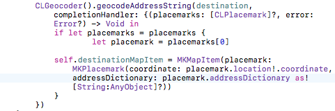
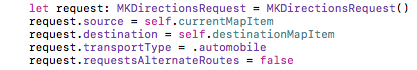
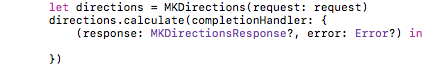
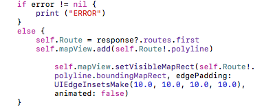
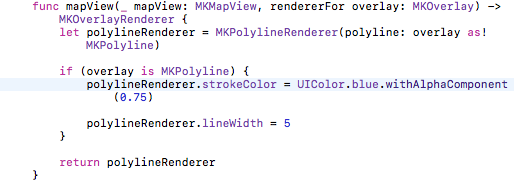
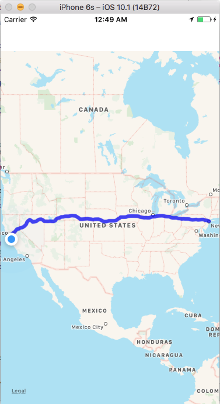

To navigate to a destination, you can ask the user to input an address, but for simplicity we will create a variable and hard code an address to use for the destination
Next, create MKMapItem variables inside the ViewController class but outside of the functions
MKMapItems hold information about a specific point on a map. So, these variables will hold information about the user's current location and the destination
This line will set the currentMapItem variable to hold the information for the current location
Setting the destinationMapItem variable is more complicated. You need to use the CLGeocoder class to convert the destination address into coordinates that can be used to locate the destination on the map. You should put the CLGeocoder object inside the if statement that checks if the user granted access to the app to access the current location
Code Explanation: The CLGeocoder takes the destination address and returns a CLPlacemark object. You can set the placemark variable to the first placemark returned in the placemarks list. This CLPlacemark object has a location property which in turn had a coordinate property. Additionally, the placemarker has an addressDictionary propery. Use these properties to set the coordinates of the destinationMapItem
Now that both MKMapItems hold information about the two navigation points, we can now get directions to navigate between the two points
Because the CLGeocoder runs asynchronously, the rest of th code to get directions needs to be placed inside the CLGeocoder completion block so that it does not run before the CLGeocoder finishes running.
Create an instance of the MKDirectionsRequest class. This instance can then be configured with the source and destination points using the MKMapItems, you can specify the transportation mode, and you can indicate that you do not want to receive alternative routes. Your code should look like the following:
You can now create an instance of the MKDirections class from the request. This object will give you route-based directions from the user's current location to the destination address. The direction object passes the request to the Apple servers and returns the requested directions
After the directions are requested you can use the calculate function to calculate the requested route information
The calculate function also runs asynchronously, so the following code to display the directions must be placed inside the calculate return block
Code Explanation:
if error != nil - if an error is returned, will print ERROR to the console
self.Route = response?.routes.first - sets the Route variable to the first route returned from the calculate function. The Route variable must be declare outside of the ViewController to be used here
self.mapView.add(...) - adds the line to the map for the route
self.mapView.setVisibleMapRect(...) - bounds the size of the map on loading to fit the directions
Before the route can be displayed on the map, the following function needs to be added to the ViewController class to render the polyline
When you run the app the route will now be displayed on the map
